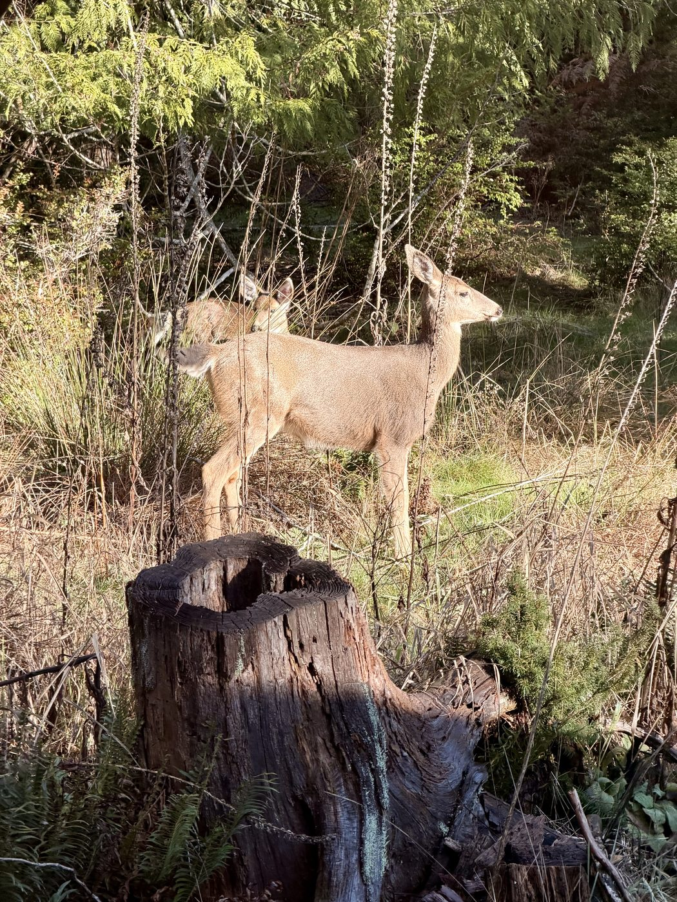
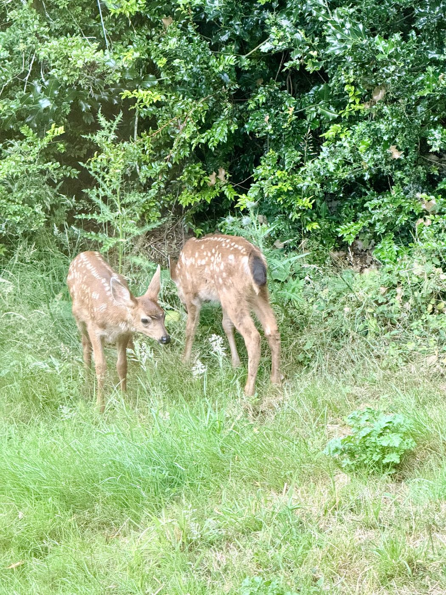
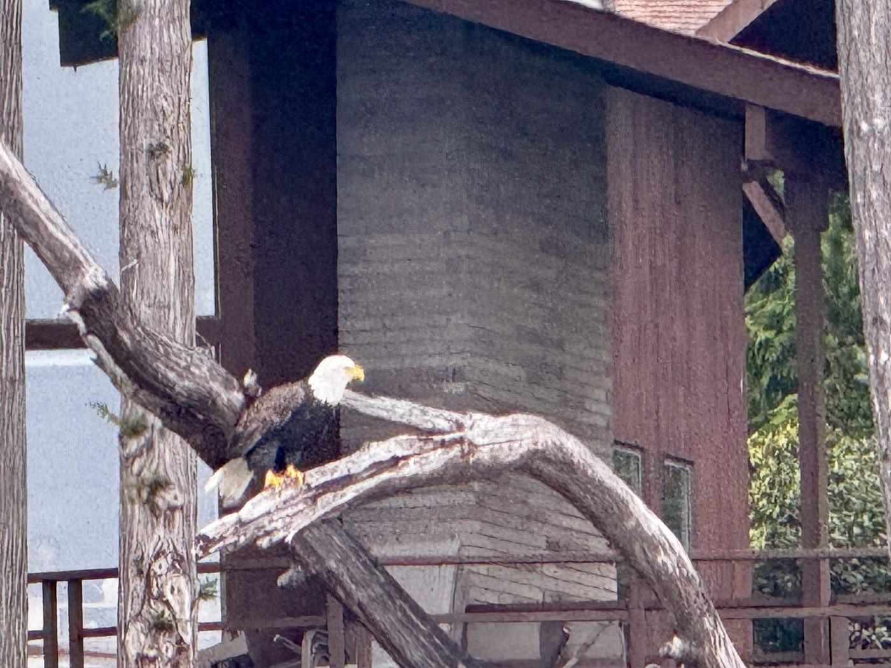
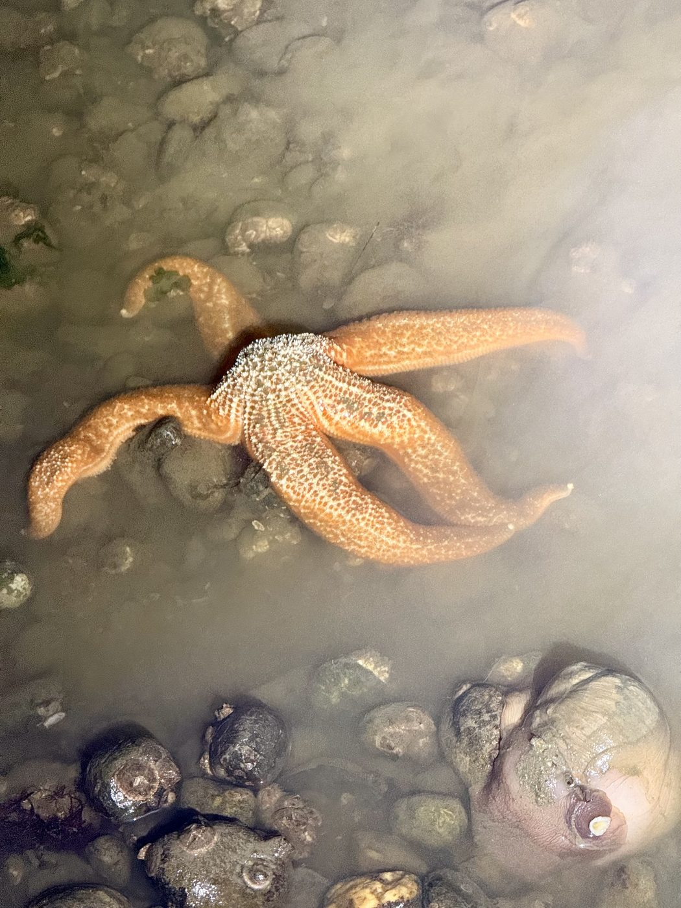

Wildlife & Habitat
The deer, eagles, shorebirds and wildflowers that make their home alongside us.
One of the quiet joys of life at the Pointe is the company we keep. Black-tailed deer step through the greenbelt at first light, fawns curl into the tall grass by midsummer, bald eagles wheel over the water and nest in the high firs, and shorebirds work the beaches at every low tide. The forest and shoreline that surround us are a living habitat, and its residents were here long before we were. Watching them, quietly and from a respectful distance, is one of the simplest pleasures the community offers.





The Pointe's wildflowers
The greenbelt does not feature an abundance of flowers, probably due to deer browsing, but we do have some:
- Twinflower, moist shady areas, tiny flowers close to the ground; blooms all summer.
- Orange & hairy honeysuckle, vines among trailside brush; prefers partial shade; blooms late spring to early summer.
- Red Indian paintbrush, dry environments, high on the bluffs north of the Bo'sun stairs in summer.
- Columbia tiger lily, shady, moist places, May to August; a spectacular flower, please leave it for the next person to enjoy.
- Yellow violets, very low-growing, along shady moist trails in spring and early summer.


Living alongside our wildlife
The Pointe is their home as much as ours, and a few small habits keep it healthy for everyone, wild and human alike.
Please don't feed the wildlife. Foods that aren't part of an animal's natural diet, corn, apples, bread and store-bought feed, can upset its digestion and do real harm. A well-meant handout can leave an animal worse off than none at all, so it is kindest to let them forage as they are meant to.
Give raccoons their space. Clever and endearing as they are, raccoons can carry diseases passed through contact with them or their waste. Enjoy them from a distance rather than handling them, and if you are ever bitten, scratched or exposed to their waste, check with a physician.

A note on cougars
Cougars are seen on the Pointe's trails from time to time. They are shy by nature and rarely a concern, but a few sensible precautions keep everyone comfortable: keep small children close and indoors by dusk, feed pets indoors and bring cats and dogs in from dusk to dawn, close off the spaces beneath porches and decks, and use garbage cans with tight-fitting lids. Because predators follow prey, not feeding the wildlife helps here too.